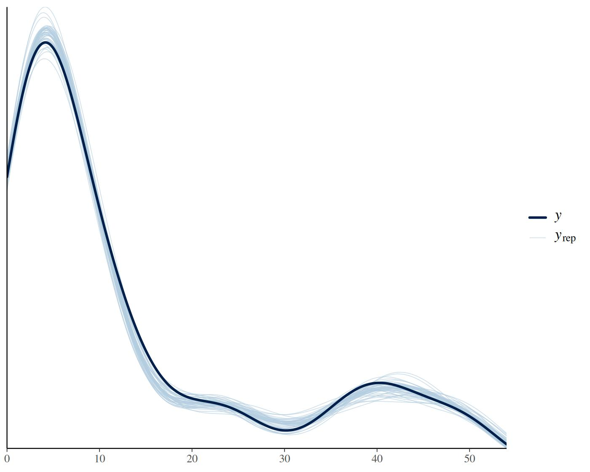

1 What bmm does
bmm fits cognitive measurement models to behavioral data: models whose
parameters stand for cognitive processes, such as the precision of a memory
representation or the sensitivity in a recognition task. You write the model
for each parameter with the formula syntax of brms, the R package for
Bayesian regression, and bmm translates the measurement model into a
distribution that brms can pass to Stan, the sampler behind it. In other
words, you get hierarchical Bayesian estimates of interpretable parameters
with the same formula interface you already use for regression.
This page takes you from an installed package to a first fitted model. It has three parts: checking that your machine can fit models, finding the model that matches your task, and fitting one model end to end.
2 Install and check your machine
The released version is on CRAN, the development version on GitHub:
install.packages("bmm")
# development version
if (!requireNamespace("remotes")) {
install.packages("remotes")
}
remotes::install_github("popov-lab/bmm", upgrade = "never")upgrade = "never" keeps remotes from updating the packages bmm depends
on. Updating Rcpp, StanHeaders or RcppParallel underneath an installed
rstan can leave rstan unable to load, in particular on Windows. This
matters even if cmdstanr does the sampling, because brms uses rstan to
store every fit.
Fitting a model needs more than the package: a C++ compiler, and a Stan
backend, which is the software that compiles the model and samples from it.
There are two backends, cmdstanr with CmdStan and rstan; we recommend
cmdstanr. These are the parts that fail most often on a fresh machine, and
the error usually shows up only when the first model refuses to compile.
Therefore, run bmm_setup() before anything else:
The function checks each requirement, prints PASS, FAIL or SKIP per
check, and gives one fix for every check that failed. It installs nothing
itself. With the default smoke_test = TRUE, it finally compiles and samples
a small mixture model, which is the only check that shows the whole chain
works. This is what the report looked like on the machine that built this
page; we skipped the smoke test here, so its line reads SKIP instead of
PASS:
#> bmm setup check (Linux, R 4.6.1)
#>
#> PASS C++ toolchain R compiled a small test file
#> PASS cmdstanr 0.9.0.9002
#> PASS CmdStan 2.40.0
#> PASS CmdStan toolchain make and a C++ compiler are on the PATH
#> PASS rstan 2.32.7
#> PASS Backend bmm() will use cmdstanr (the cmdstanr package is
#> installed)
#> SKIP Smoke test not run (smoke_test = FALSE)
#>
#> No check failed; run bmm_setup() to compile and sample a test model too.If a check fails, apply the fix it prints, restart R, and run bmm_setup()
again. Once every check passes, you are ready to fit models.
3 Which model fits your task
You come to bmm with data from a task, so this section is organized by task.
Each entry lists the models bmm provides for it and links to the article that
walks through them. The lists are generated from the package, so they show the
models of the version this page was built from.
3.1 Continuous reproduction
Participants reproduce a continuous feature, such as a color or an orientation, and the response error on the circle is the dependent variable. The continuous reproduction article describes the task and compares the models.
-
imm(): Interference measurement model by Oberauer and Lin (2017) -
mixture2p(): Two-parameter mixture model by Zhang and Luck (2008) -
mixture3p(): Three-parameter mixture model by Bays et al (2009) -
sdm(): Signal Discrimination Model (SDM) by Oberauer (2023)
3.2 Categorical recall and n-AFC decisions
Participants pick one response from a set of categories, for example the correct item, an item from another list position, or an item that was not studied. The M3 article shows how to set up the response categories and the activation model.
-
m3(): The Multinomial / Memory Measurement Model
3.3 Detection, recognition and confidence judgments
Participants decide whether a signal was present or an item was studied, rate
their confidence, give Remember/Know judgments, pick the target among several
alternatives, or rank the alternatives. Signal detection theory separates
sensitivity from response bias for each of these response formats, and bmm
has one model per format. The models take response counts per subject and
condition. sdt_yn() also accepts one row per trial, as the first fit below
shows; the rating, ranking and Remember/Know models need one count column per
response category, which aggregate_sdt_cdp_data() builds for sdt_cdp()
from trial-level data whose confidence runs on one old/new scale. The
signal detection article
walks through the yes/no, rating, m-AFC and ranking models, and the
dual-process and meta-d′ article
through the dpsdt and metad versions of sdt_rating() and through
sdt_cdp().
-
sdt_cdp(): Continuous Dual-Process Signal Detection Theory (CDP) -
sdt_mafc(): Signal Detection Theory (m-AFC) -
sdt_ranking(): Signal Detection Theory (Ranking) -
sdt_rating(): Signal Detection Theory (Confidence Rating) -
sdt_yn(): Signal Detection Theory (Yes/No)
The models differ in three respects. The response format is what the
participant produces. The dist argument names the noise distribution assumed
for the evidence on which the decision is based; the first entry in the table
is the default of that model, and ?modelname explains the others. The last
column names the parameter that lets the signal distribution differ in spread
from the noise distribution, if the model has one. This table is built from the
package, so a model appears once it is part of the version this page was built
from.
| Response format | Model | dist | Unequal-variance parameter |
|---|---|---|---|
| yes/no detection, old/new recognition | sdt_yn() |
normal, gumbel_min, gumbel_max, logistic | sdratio |
| confidence ratings |
sdt_rating(), versions standard, dpsdt, metad
|
normal, gumbel_min, gumbel_max, logistic | sdratio |
| m-alternative forced choice | sdt_mafc() |
normal, gumbel_min, gumbel_max, logistic | none |
| ranking | sdt_ranking() |
gumbel_min, normal |
sdratio (normal noise only) |
| old/new confidence with Remember/Know judgments | sdt_cdp() |
normal |
sigmar (recollection) |
3.4 Choices and response times
Participants choose between two options and the response time is recorded on every trial. The DDM article and the censored shifted Wald article cover trial-level data. The EZ-diffusion article covers the case where you only have the mean and variance of the response times and the accuracy per condition. Fast guesses and other contaminant responses are the topic of the response time contamination article.
You can print the same list in R at any time with supported_models(), and
?modelname (for example ?sdt_yn) documents the data a model expects, its
parameters and its default priors, that is, what the model assumes about each
parameter before it sees the data.
4 Fit your first model
We fit a yes/no signal detection model to the recognition data of Broeder and
Schuetz (2009, Experiment 3), which ships with the package as
broeder_schuetz_2009_e3 (see ?broeder_schuetz_2009_e3 for the source). 40
participants judged items as old or new under five base-rate conditions. A
higher proportion of old items makes participants more willing to say “old”,
so the conditions shift the response criterion while sensitivity should stay
the same.
4.1 The data
sdt_yn() expects one row per subject, condition and stimulus type, with the
number of “old” responses and the number of trials in that cell:
head(broeder_schuetz_2009_e3)
#> id condition stimulus n_old n_trials
#> 1 1 br1 1 1 6
#> 2 1 br1 0 1 54
#> 3 1 br2 1 10 15
#> 4 1 br2 0 2 45
#> 5 1 br3 1 22 30
#> 6 1 br3 0 10 30-
stimuluscodes the stimulus type:1for old items,0for new items. -
n_oldcounts the “old” responses in the cell. For old items these are the hits, for new items the false alarms. -
n_trialsis the number of items in the cell, which differs between cells because the base rate manipulates it. -
conditionruns from the most conservative (br1) to the most liberal (br5) base rate. The base rate is set through the number of old and new items: inbr1a participant saw 6 old and 54 new items, inbr554 old and 6 new.
4.2 The model
A model object names the columns the model needs. Nothing is estimated yet;
this only tells bmm where to look:
model <- sdt_yn(
response = "n_old",
stimulus = "stimulus",
n_trials = "n_trials"
)If your data has one row per trial instead of counts, you can pass it as is:
the column named in response then holds 0 or 1, the column named in
n_trials holds 1 on every row, and stimulus codes the item of that
trial as before. We leave dist at its default, "normal".
The model has two parameters. d is the sensitivity: the distance between
the evidence distributions of old and new items. criterion is the response
bias: the point on the evidence axis above which participants say “old”. A
third parameter, sdratio, allows the two distributions to differ in spread,
and stays fixed to equal variances unless you add a formula for it.
4.3 The formula
In bmm, every parameter gets its own formula. This is the main difference
from brms, where you write one formula with the response on the left-hand
side, such as n_old ~ condition. bmf() is short for bmmformula().
Concretely, we let sensitivity vary between participants, and we estimate one
criterion per base-rate condition, again with participant-level variation:
formula <- bmf(
d ~ 1 + (1 | id),
criterion ~ 0 + condition + (1 | id)
)(1 | id) lets a parameter vary between participants, as in the mixed-model
syntax of lme4 and brms. 0 + condition drops the intercept, so each
coefficient is the criterion of one condition rather than a difference from a
reference condition. The
bmmformula article
explains the syntax in full, including how to fix a parameter to a constant.
4.4 The fit
bmm() takes the formula, the data and the model. Its file argument caches
the fit on disk, creating the folder if it does not exist; this is how this
page avoids refitting the model every time it is built, and deleting the
file forces a refit. Everything else goes to brms::brm(), so you can set the
number of chains, cores and iterations as you would there. A chain is one run
of the sampler. Its first iterations, the warmup, tune the sampler and are
discarded; the remaining iterations are the posterior draws from which every
estimate below is computed. The defaults are 4 chains of 2000 iterations,
the first 1000 of each as warmup, which gives 4000 posterior draws:
fit <- bmm(
formula = formula,
data = broeder_schuetz_2009_e3,
model = model,
cores = 4,
backend = "cmdstanr",
file = "assets/bmmfit_sdt_yn_getting_started"
)4.5 Reading the results
The summary lists the estimates for each parameter, together with the
convergence diagnostics you know from brms:
summary(fit) Model: sdt_yn(response = "n_old",
stimulus = "stimulus",
n_trials = "n_trials")
Links: d = identity; criterion = identity; sdratio = log
Formula: d ~ 1 + (1 | id)
criterion ~ 0 + condition + (1 | id)
sdratio = 0
Data: broeder_schuetz_2009_e3 (Number of observations: 400)
Draws: 4 chains, each with iter = 2000; warmup = 1000; thin = 1;
total post-warmup draws = 4000
Multilevel Hyperparameters:
~id (Number of levels: 40)
Estimate Est.Error l-95% CI u-95% CI Rhat Bulk_ESS Tail_ESS
sd(d_Intercept) 0.60 0.08 0.46 0.78 1.01 670 1560
sd(criterion_Intercept) 0.15 0.02 0.11 0.21 1.00 1402 2270
Regression Coefficients:
Estimate Est.Error l-95% CI u-95% CI Rhat Bulk_ESS Tail_ESS
d_Intercept 1.53 0.10 1.34 1.73 1.01 463 986
criterion_conditionbr1 0.68 0.05 0.60 0.77 1.00 1531 2569
criterion_conditionbr2 0.43 0.04 0.35 0.51 1.00 1280 1931
criterion_conditionbr3 0.09 0.04 0.02 0.17 1.00 1194 2099
criterion_conditionbr4 -0.23 0.04 -0.31 -0.15 1.00 1185 2058
criterion_conditionbr5 -0.37 0.04 -0.45 -0.29 1.00 1356 2171
Constant Parameters:
Value
sdratio_Intercept 0.00
Draws were sampled using sample(hmc). For each parameter, Bulk_ESS
and Tail_ESS are effective sample size measures, and Rhat is the potential
scale reduction factor on split chains (at convergence, Rhat = 1).
Each row is named after a parameter and the predictor it belongs to. The
first block, headed “Multilevel Hyperparameters”, gives the standard
deviations of the participant-level effects. The second block gives the
population-level estimates: d_Intercept is the sensitivity averaged over
participants, and the five criterion coefficients are the criteria of the
base-rate conditions. Both parameters use an identity link here, so the
estimates are on the natural scale of the model. Estimate is the posterior
mean, Est.Error the posterior standard deviation, and l-95% CI and
u-95% CI bound the 95% credible interval, the range that holds the
parameter with 95% probability given the data and the priors. The last block
lists sdratio at its fixed value of 0, which the Formula block shows as
sdratio = 0; the parameter is on a log scale, so 0 means a ratio of 1, that
is, equal variances. In the summary above, the criterion decreases from br1
to br5. That is, participants say “old” more readily the more old items
they expect, which is what the manipulation was meant to do, while
sensitivity is one number for all conditions because we modeled it that way.
Before you interpret an estimate, check that every Rhat is below 1.01 and
that Bulk_ESS and Tail_ESS, the effective sample sizes, are above 400. If
they are not, raise the number of iterations, for example with
bmm(..., iter = 4000), or look at the
Stan guidance on runtime warnings.
A posterior predictive check compares the observed counts with counts simulated from the fitted model. The dark line is the distribution of the observed counts, each light line the distribution of one simulated data set. If the model describes the data, the dark line sits inside the bundle of light ones:
pp_check(fit, ndraws = 50)
5 Where to go next
- The bmmformula article covers the formula syntax: fixed parameters, non-linear predictors, and how parameters on a link scale are read.
- The task sections above link to one article per model family, each with a worked example on package data.
-
?bmmdocuments the fitting function, and Extracting model information shows how to get the default priors, the Stan code and the Stan data of a model before you fit it. - If a model you need is missing, or something does not work as this page says, open an issue on GitHub.